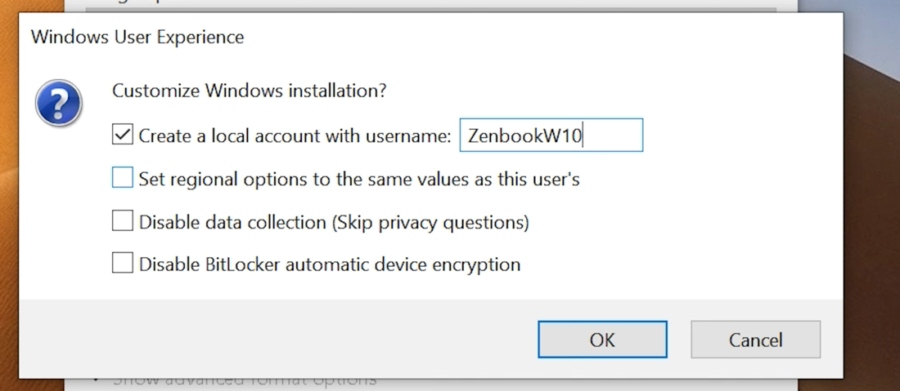

Install Windows 10 aw9
ma3arfshi 3lash dayer website ida bghiti d skippi website shoflk had video, ana menno shoft steps.
Note: Windows 10 reached end of support (Oct 14, 2025). You can still install it; walakin 7di karek men viruses hit security updates are no more.
Steps
1) Get the Windows 10 ISO
- Download the ISO from Microsoft (link at wla lta7t). Click the download button under
"Création d’un support d’installation de Windows 10" - After running the
setup dial Media Creation Tool, agree to the license and then pick the second option (atkon shihaja 3anda 3alaqa b usb...) - pick shi random folder for now li d installi feh windows 10, 3la baydmen tsala installation we go configure usb
2) Make a bootable USB (Rufus)
- click the link on the right (or lta7t) to
downloadRufus, on the latest release page, pick first option "rufus-....exe" - Open Rufus → select your USB → select the ISO.
- app should look like this:

- Device howa USB dialk, Boot selection khtar hna windows 10 li instaliti qbayl. image optionpick standard windows installation
- Partition scheme:im not sure if yours is gpt wla mbd, check shmen model 3ndk u shof ina wa7ed dkhtar. Probably GPT tho
- Click Start.
- 
- f screen foqiya, press create local account and pick a name.
- Click Ok.
- ignore the warning and proceed
3) Put drivers on the same USB
- fash dsali men rufus, mshi n USB
- Create a folder: /Drivers
- Download HP drivers for your exact model and copy them there.
- Copy Bluetooth/Wi-Fi/Chipset/Graphics/Touchpad/Touchscreen drivers there. (Do not modify /sources or /boot.)
- remove usb dialk u tfi pc fash t2aked kolshi howa hadak
4) Boot from USB
- turn on laptop and spam F10(button li kadakhlek n bios ana mashi mt2akd wash F10)
- mshi n system configuration
- activi USB Boot
- fetesh 3la Boot Options wla something along the lines of Boot Order
- Pick "USB Diskette on Key / USB Hard Disk"
- Save and Close. Pc ghay restarti daba ida madakhlksh n installation dial windows:
- Press ESC moraha press F9 (Boot menu) and choose USB.
- Restarti Pc
daba 3andk PC mtfi u USB feh /drivers folder u dekshi dial rufus. to install windows 10:
5) Install Windows
- Delete Partitions kamlin li 3andek previously, 7ta debqalek 1 partition kbira (IGNORE IF YOU DONT HAVE MULTIPLE PARTITIONS)
- click next lol
- wait for it to begin installing windows.
- Configure your experience.
- any option that shows up about wifi just skip it for now.
- mora madssali, installi dek drivers
safe daba an installiw windows. choose language, click install now then pick second option diyal "install windows only (Advanced)". In the Partitions section just